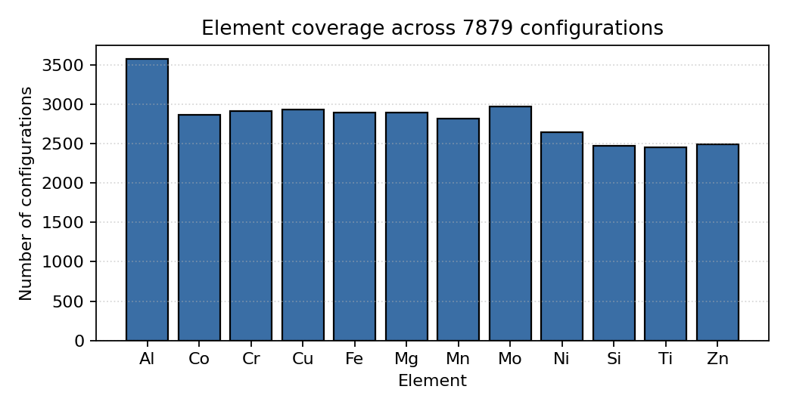
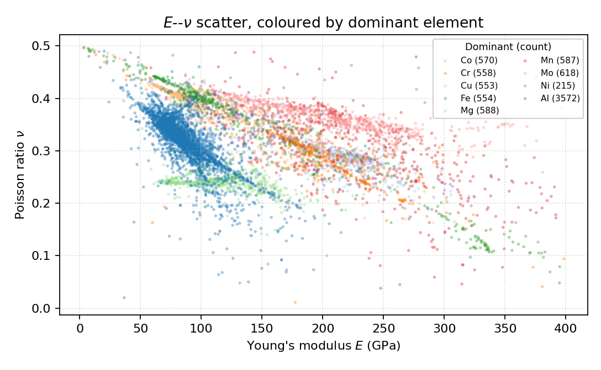
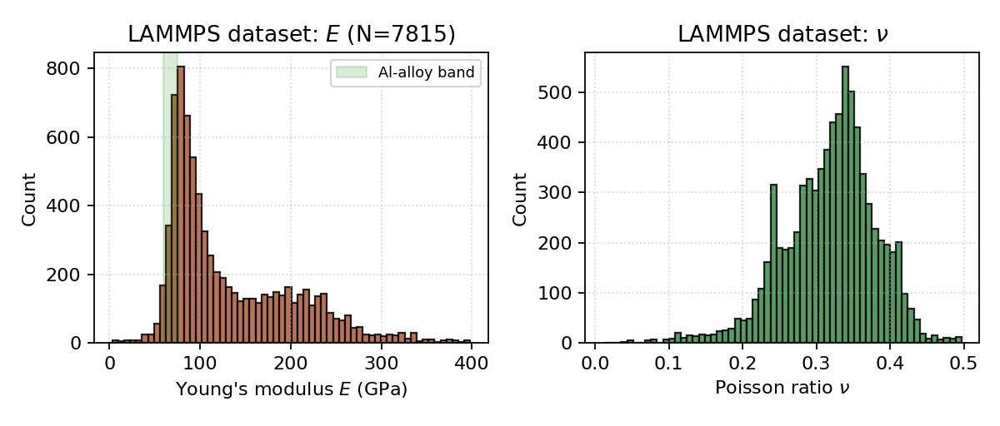
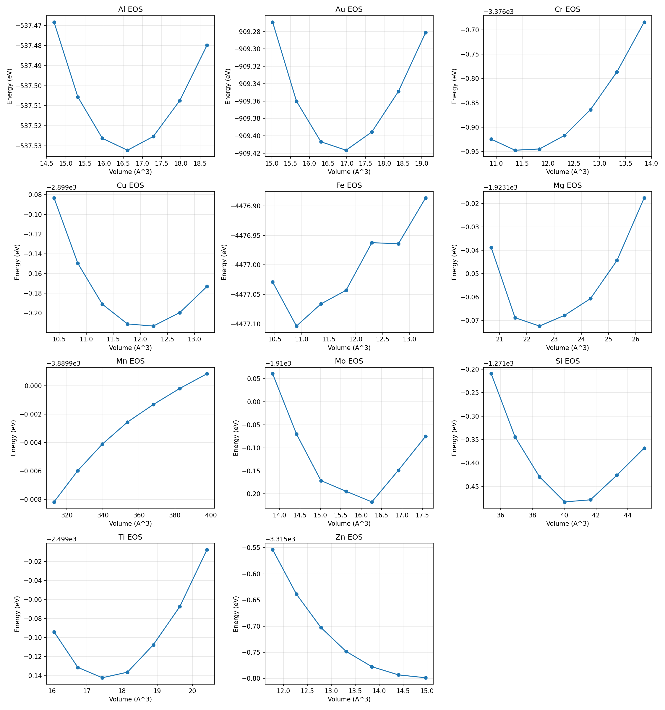
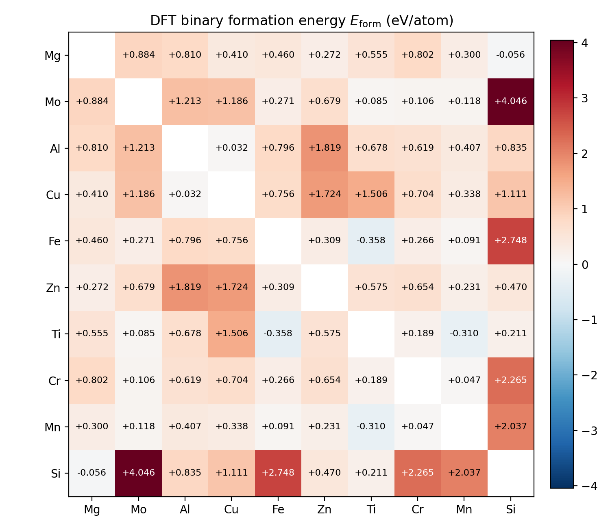
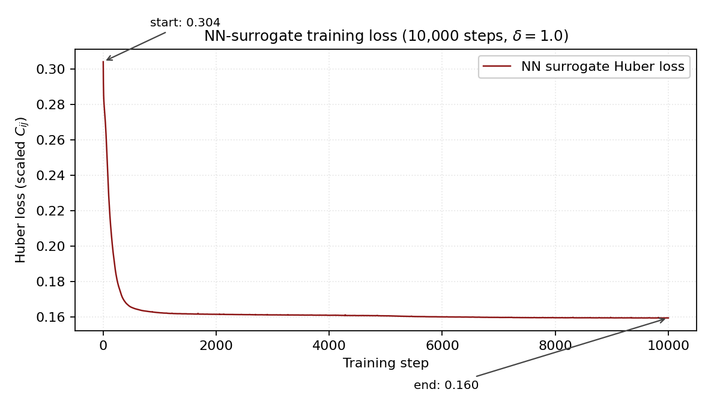
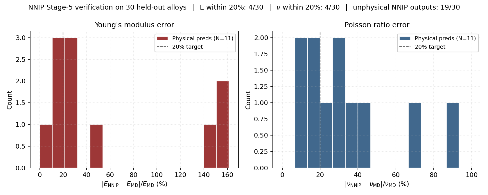
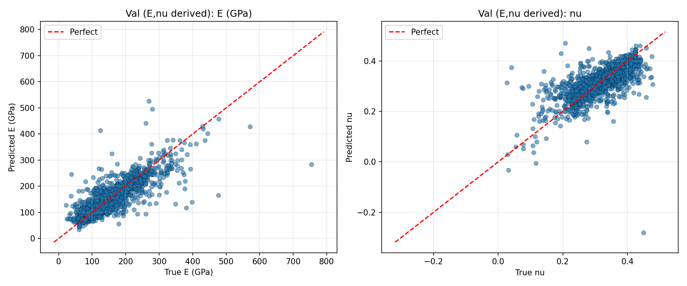
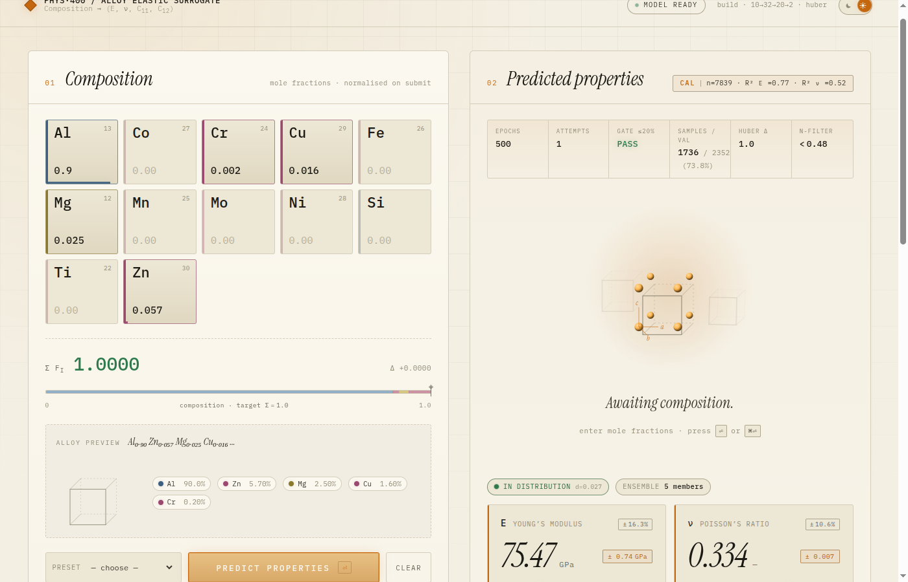

PHYS 400 · Senior Project · METU Physics
Automated construction of multi-element MEAM interatomic potentials — a DFT-informed neural-network optimization framework. No hand fitting, no experimental input.
The problem
Two numbers summarise how a cubic metal resists deformation: the elastic constants C11 and C12. From them follow the engineer's favourites — Young's modulus E and Poisson's ratio ν. Measuring them in the lab is slow and expensive; molecular dynamics computes them in seconds, if an accurate interatomic potential exists. For metals, that potential is MEAM — and fitting its parameters by hand is expert work that does not scale to 12-element alloys. This project makes the computer do the fitting.
Strain a crystal along one axis and watch the stress respond. The slope of that response is set by C11.
E = (C11−C12)(C11+2·C12)/(C11+C12)
Stretched one way, the lattice contracts the other way. That sideways shrink is ν — and it is numerically fragile, which shapes the whole method.
ν = C12 / (C11 + C12)
The raw material
An aluminium-7075 supercell (91% Al, 6% Zn, 3% Mg) vibrating under the MEAM potential in LAMMPS, rendered with OVITO's ray tracer. Every elastic constant in this project is harvested from simulations like this one — strain the box by a tenth of a percent, read the stress, repeat 7,879 times.
The method
The upper track builds a composition→property database; the lower track builds the potential itself. They meet in a neural network that learns the physics forward — then runs it backward.
Compositions are drawn on the 12-element simplex — Al, Co, Cr, Cu, Fe, Mg, Mn, Mo, Ni, Si, Ti, Zn — weighted toward aluminium, the commercially dominant region. Of ~7,900 generated configurations, 7,815 survive the physicality filter (E>0, 0<ν<0.48, C11>C12).

Each composition becomes a ~4 nm supercell. After energy minimisation, axial strains of 10−3 along ±x, ±y, ±z give C11 and C12 by central differences; E and ν follow analytically. Median E = 103.6 GPa, median ν = 0.326.


Plane-wave PBE–GGA calculations give each element's lattice constant, cohesive energy and bulk modulus from an equation-of-state fit — plus 66 binary formation energies whose signs encode which pairs like to mix.


The DFT references pin the universal binding (Rose) curve and fix each element's MEAM decay exponent α = √(9BΩ/Ecoh) — from α ≈ 4.5 (Al, Si) to 10.9 (Zn). Formation-energy signs seed the cross-terms. The result: a physically sensible 12-element MEAM library, before any learning happens.
5a — the composition surrogate. A 12→32→20→2 network maps composition to (C11, C12) under a Huber loss; E and ν are recovered analytically because regressing ν directly is ill-conditioned. A five-seed deep ensemble provides uncertainty.
5b — the inverse optimizer. A second network learns (MEAM parameters) → (C11, C12). Freeze it, and gradient descent through the network finds the parameters that hit a target stiffness:


Does it work?
Validated against published elastic data for 43 real alloys. On aluminium — where the training corpus is richest — the surrogate predicts Young's modulus to 2.3%. For Al 7075 it gives E = 75.5 GPa, ν = 0.334 against published 71–72 GPa, ν ≈ 0.33. Sparse families inherit the corpus bias: a data limitation, not a methodological one.
| Family | N | E · ML | E · MEAM | ν · ML | ν · MEAM |
|---|---|---|---|---|---|
| Aluminium | 33 | 2.3 | 7.4 | 4.0 | 4.5 |
| Titanium | 6 | 11.6 | 140.0 | 13.2 | 14.6 |
| Stainless | 3 | 69.6 | 324.1 | 75.5 | 47.3 |
| Overall | 43 | 10.8 | 42.2 | 7.2 | 7.1 |
Mean absolute percentage error vs. published values — composition surrogate (ML) and DFT-initialised potential (MEAM), by alloy family.


An automated, end-to-end 12-element MEAM pipeline — from random compositions to an optimized multi-element potential, no hand fitting.
Aluminium-alloy elastic prediction from composition alone, within a few percent of published values.
DFT-seeded, NN-trained MEAM — first-principles references refit through a neural surrogate, with a working proof of concept: of 30 unseen alloys, 11 stayed physically stable and 4 matched MD within ~20%.
Next: wider composition coverage, longer surrogate training, denser DFT sampling. The pipeline already runs end to end.